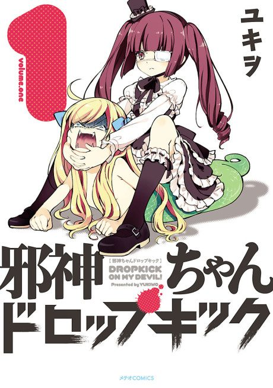

Dropkick on My Devil!
邪神ちゃんドロップキック
The anime takes the story to Unclear.
6.7AniList score
—Animeter, no votes yet
35episodes, 4 seasons
4 seasons, 35 episodes
In airing order. Episode numbers on this site count straight through every season, so season 2 starts at episode 12.
1
2018 · TV
Dropkick on My Devil!
Episodes1–1111 ep
2
2018 · Web
Dropkick on My Devil! Episode 12
Episodes12–121 ep
3
2020 · Web
Dropkick on My Devil!! Dash
Episodes13–2311 ep
4
2022 · TV
Dropkick on My Devil!!! X
Episodes24–3512 ep
Sources: AniList